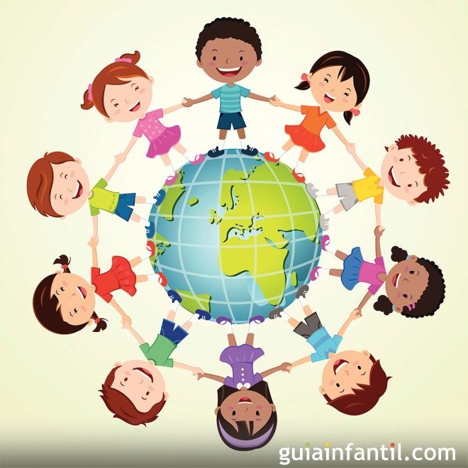

Educación para la paz
Introducción
Para poder entender el contenido de este blog es necesario comprender lo que significa el concepto de Educación para la paz, por lo cual primero desglosaré las palabras que lo componen. Para empezar la palabra Educación es un proceso con el cual obtenemos conocimientos, valores, diversas habilidades, y nos es enseñado por alguien con gran conocimiento sobre el tema. Mucho se dice que la educación viene de casa con lo que se refiere al seno familiar, y también a la educación académica que proviene de la escuela. La Paz habla de un estado de bienestar en el que no hay conflicto y resulta opuesto a otros conceptos como la guerra. Es una cualidad deseable universalmente, es valorada por todas las sociedades y culturas, a nivel de los Estados y países y también en los hogares, en las relaciones interpersonales y en el interior de cada individuo.

Mantener la paz implica la práctica de valores como la tolerancia, la justicia y una apertura al diálogo. Es por medio de la paz que los individuos pueden sentirse a gusto y en armonía consigo mismos y con su entorno social. Es un acuerdo tácito que permite a todos los individuos realizar sus actividades sin interferencias y prevenir la violencia. Además, busca fortalecer los vínculos sociales y que primen los valores del respeto, la justicia y la aceptación. Ya entendidas ambas palabras la Educación para la paz también es un proceso que promociona técnicas, conocimientos, valores y aptitudes, que apoyen desde que son niños y jóvenes como una especie de herramientas que los ayuden a resolver conflictos tanto manifestados como los que son estructurales para que se de la paz entre grupos.
La educación para la paz es algo que vamos aprendiendo a lo largo de los años y conforme vamos creciendo basado en valores y conocimientos, es muy importante siempre tener paz, ya que es un símbolo de armonía ya sea con uno mismo o con los demás. Este tipo de educación vela por el desarrollo tanto individual como colectivo, por ello, la manera en el que el proceso de educación por parte de quienes busquen transmitir contenidos que aluden a la paz es vital. El compromiso de ‘’educar’’ tiene que ver con dirigir, vivir, compartir, con base en políticas éticas, valores, saberes, enseñar a generar habilidades, para así construir sociedades justas y libres de violencias, la educación para la paz puede brindar muchos elementos para poder alcanzar el desarrollo de este tipo de sociedades.
Iniciativas sobre la Educación para la paz

- Promover métodos alternos para la solución del conflicto.
- Dar conferencias donde se hable del tema (cosa que la UANL y Facdyc ya hacen) sólo que pienso que deber llevarse a cabo con más frecuencia, o mostrarnos proyectos realizados por los estudiantes.
- Enseñarla educación para la paz desde el nivel básico para que los niños se familiaricen con ella, de esta manera tendrán una herramienta útil para la vida laboral y personal. Esto sería implementando más horas en la materia de Ética.
- Enseñar los beneficios que tiene la educación para la paz en nuestra vida, también para mejorar nuestras relaciones con terceros.
- Tener en cada salón un “agente de paz” alguien que se asegure de exponer sobre ese tema a los demás y pueda ser mediador de conflictos académicos dentro del aula.
- Idealizando; Que se Imaginen cómo sería la paz en un mundo ideal. No importa lo extraño que les parezcan sus ideas. Una vez que hayan imaginado las características de un mundo pacífico, implemente todos estos ideales en su vida diaria de todas las formas posibles.
- En las escuelas al momento en el que haya algún conflicto entre dos estudiantes los maestros le pueden hacer de mediadores al ponerlos frente a frente a que den su punto de vista sobre los problemas y lo ocurrido, los maestros se meterían para clamar la situación cuando empiecen a ver que llegan a haber insultos o indicios de agresiones de alguna de las dos partes, en mi opinión es una forma de enseñarle a los niños pequeños que las cosas no se resuelven con violencia.
¿Sabías qué…?
La Facultad de Derecho y Criminología cuenta con la Red Académica Internacional de Investigación para la Paz (RAIIP), que ayuda a difundir los estudios de Paz, es una red para la investigación donde puede acercase la ciudadanía interesada y los estudiantes.
¿Tú cómo practicarías educación para la paz?
- Personalmente recomendaríamos educarnos leyendo sobre métodos pacíficos para resolver un problema y trataría de aplicarlos en mi vida diaria como en la escuela al momento de que se de un conflicto. Siento que es la mejor forma de que se vea reflejado.
- El ser atento y detallista; Al igual que tú, las personas que te rodean también sienten una necesidad de paz. La buena noticia es que tú puedes ayudarles a encontrarla. Por ejemplo, sé detallista. Si un amigo te cuenta que desde hace días tiene ganas de comer chocolate, ¿no te gustaría ser tú quien lo sorprenda con una rebanada de pastel? A veces los pequeños obsequios pueden dar mucha alegría y calma a los demás.
- El poner en práctica los valores nos ayudan a poner en práctica las acciones para la paz que hemos aprendido a lo largo de los años, ya sea en la escuela o en la casa, el dialogar con la otra parte cuando tenemos desacuerdos, ayuda a lograr a tener una mejor percepción del punto de vista de la otra u otras personas, el enseñarle a nuestros hermanitos, primitos, sobrinos, hijos o hijas que no todo se resuelve a golpe y gritos, evitando la típica frase de “si te pega el primero regrésale el golpe” para que no crean que esa es la única forma de resolver los problemas que puedan tener.
- El respetar las ideologías de otras personas y lograr entender que cada uno tiene unos diversos puntos de vista por la forma en la que fuimos criados, si se puede llegar a aceptar que cada uno tiene diferentes puntos de vista y opiniones, la ´paz se inculca en el respeto, y empieza desde los más pequeños hasta los más grandes, así los podemos poner en práctica, el dejar que cada quien sea libre de tomar sus decisiones y no interponerse en ellas si no lastiman a nadie, el tratar a todos por igual, sin fijarnos en su raza, color, religión o sexo, solo así lograremos una paz para nosotros y los demás.
- Actuar en casos de bullying.
- Tener buenos valores.
- Visualizar rol de emociones.
- Resolver conflictos.